UpSKILL / ReSKILL
การพัฒนาเฟิร์มแวร์สำหรับระบบสื่อสาร CAN bus ในยานยนต์
June 25, 2569
Course objective
-
- workshop: เฟิร์มแวร์ USB2ADC
-
- workshop: เฟิร์มแวร์ USB2CAN
-
- Invited talk (NETH/TDET): Are your code SAFE? โดยคุณโกสินทร์ และ automotive CAN application โดยคุณหรรษา
- workshop: เฟิร์มแวร์ ECU - UDS protocol
09 CAN firmware
- USB2CAN: CANable and candleLight
- AUTOSAR firmware
9. OBD-II (On-board diagnostics)
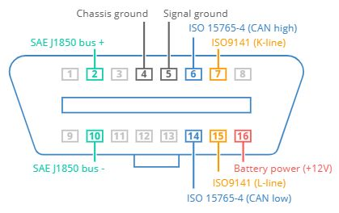
OBD-II over CAN (ISO 15765-4)
- Physical layer: 250 / 500 kbps
- Datalink layer: 11- / 29-bit ID
- Transport layer: SF (Single Frame), FF (First Frame), CF (Consecutive Frame), FC (Flow Control)
ID/payload definitions
| Concepts | Purpose |
|---|---|
Broadcast ID (0x7DF) |
payload = service/PID |
Resp msg ID (0x7E8-0x7EF) |
payload = service/PID/data |
| Parameter ID (PID) | codes used to request data, e.g. 0x03 = fuel status |
| Diagnostic Trouble Codes (DTC) | bit-encoded value of error code |
9. J1939 Transport Protocol
มาตรฐานของ SAE International เพื่อกำหนด layer ที่ต่อยอดโครงข่าย CAN bus
- ใช้ extended ID (29 bit) ด้วยความเร็ว 250/500 kbps
- 3-bit Priority, 18-bit Parameter Group Numbers (PGN), 8-bit Source Address
- CAN data frame ส่วนใหญ่เป็น periodic broadcast
- PGN 59904 (payload = PGN) ใช้ร้องขอข้อมูล
- โครงสร้างข้อมูลใน frame กำหนดด้วย Suspect Parameter Number (SPN)
- รองรับ transport layer
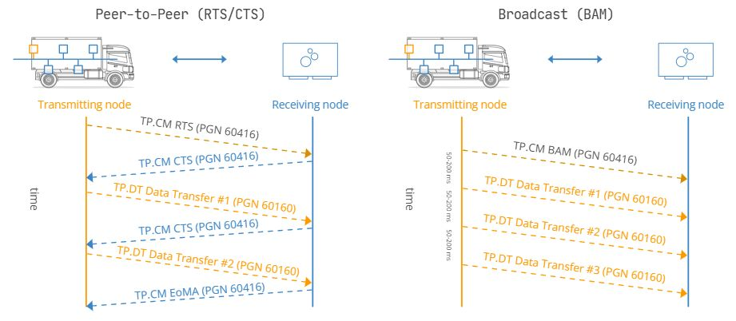
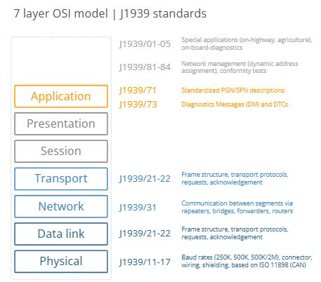
9. CCP/XCP protocol
CCP (CAN Calibration Protocol) และ XCP (Universal Measurement and Calibration Protocol) เป็นโปรโตคอลแบบ master (PC) - slave (ECU) สำหรับตรวจสอบ ECU parameter และ calibration
- CCP ใช้กับ CAN เท่านั้น ส่วน XCP รองรับ CAN, CAN-FD, Ethernet, FlexRay, …
- ไฟล์ A2L (ECU Description File) กำหนด memory address และ ECU parameter
CCP protocol
| CMD ID | Type | Direction | Purpose |
|---|---|---|---|
| 0x701 | Command Receive Object | PC \(\rightarrow\) ECU | send command |
| 0x702 | Command Response Message | PC \(\leftarrow\) ECU | send response (PID = 0xFF) |
| 0x702 | Event Message | PC \(\leftarrow\) ECU | notify event (PID = 0xFE) |
| 0x7XX | Data Acquisition Message | PC \(\leftarrow\) ECU | report data |
9. ECU data recording
Approach
- CCP/XCP polling
- CCP/XCP DAQ: ลำดับของ CRO/CRM เพื่อกำหนด address/length ในการทำ DAQ
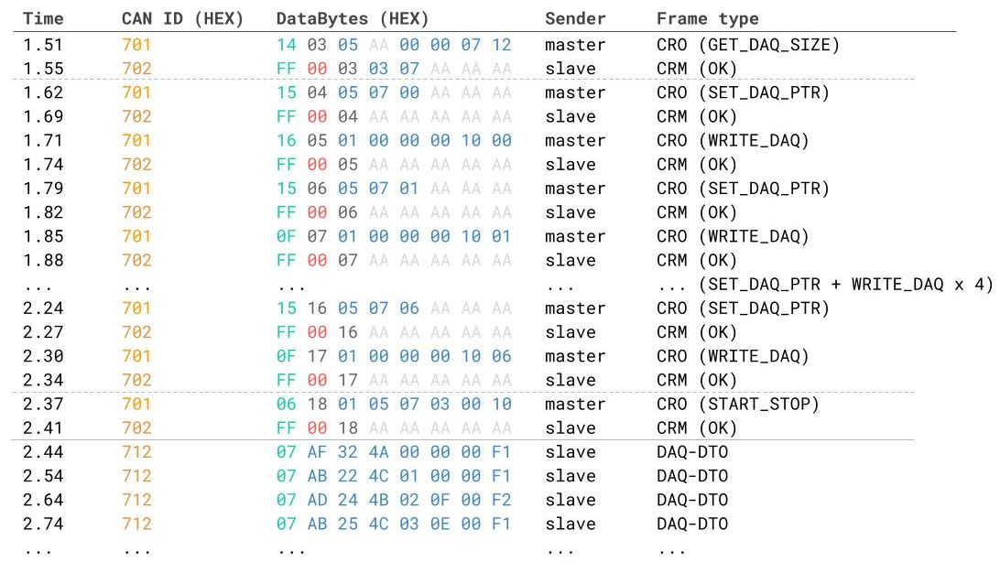
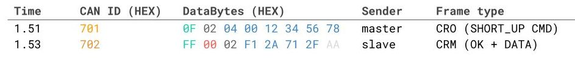
9. CANable device1
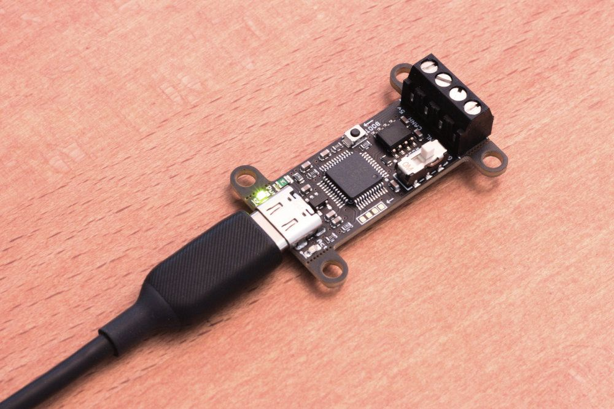
Specification
- STM32G431 microcontroller
- CAN 2.0A/B: data rate 1 Mbps
- slcan protocol
slcan (Serial Line CAN) protocol2
| Commands | Effect |
|---|---|
O↵ |
เปิดช่องสื่อสาร |
C↵ |
เปิดช่องสื่อสาร |
S{n}↵ |
กำหนด baud rate S6↵ → 500 kbps |
M0↵ |
โหมด normal |
M1↵ |
โหมด bus monitoring |
t{id}{len}{data}↵ |
ส่ง data frame t1FF3112233↵ ID=0x1FF, 3 bytes, 0x112233 |
r{id}{len}↵ |
ส่ง remote frame r1FF3↵ ID=0x1FF, 3 bytes |
9. CANable firmware
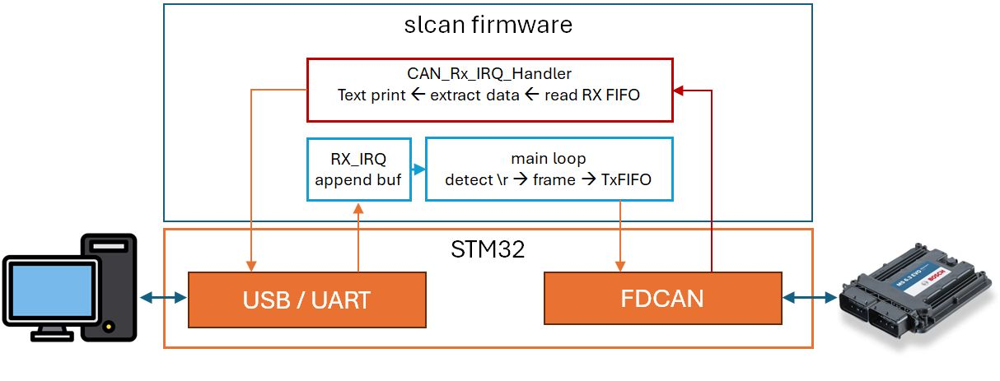
Advantages
- Easy-to-use text commands
Weakness
- Direct TX, may lost frame
- Long execution in RX IRQ handler
9. candleLight FD device
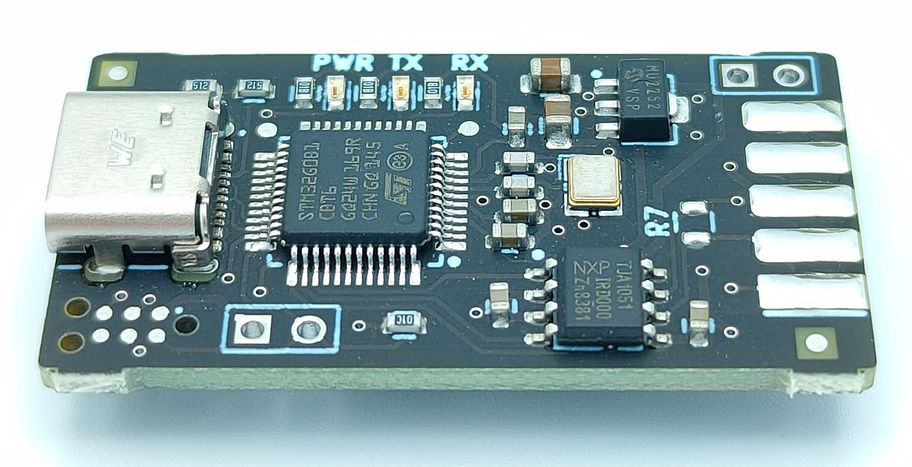
Specification
- STM32G0B1 microcontroller
- CAN 2.0 และ CAN-FD: data rate 1 Mbps
- GS-USB protocol
GS-USB protocol: gs_usb.h
#define GS_CAN_FEATURE_LISTEN_ONLY (1<<0)
#define GS_CAN_FEATURE_LOOP_BACK (1<<1)
...
enum gs_usb_breq {
GS_USB_BREQ_HOST_FORMAT = 0,
GS_USB_BREQ_BITTIMING,
GS_USB_BREQ_MODE,
...
GS_USB_BREQ_ELM_SET_PINSTATUS,
GS_USB_BREQ_ELM_GET_PINSTATUS,
};
...
struct classic_can {
u8 data[8];
} __packed __aligned(4);
struct canfd {
u8 data[64];
} __packed __aligned(4);
...
struct gs_host_frame {
u32 echo_id;
u32 can_id;
u8 can_dlc;
u8 channel;
u8 flags;
...
} __packed __aligned(4);9. candleLight firmware1
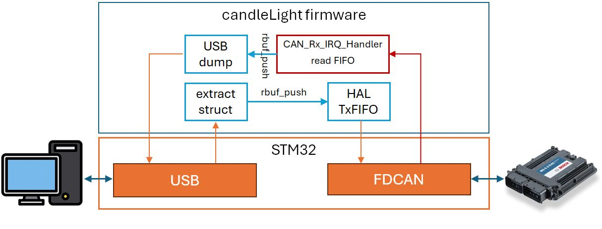
Advantages
- Use mailbox to buffer passing data
- Higher throughput, more reliable
Weakness
- Deferred Tx/Rx operations
9. Ring buffer implementation
การประกาศ struct สำหรับ CAN frame
#define CANFD_MAX_DLEN 64
typedef struct {
uint32_t id; // 11-bit or 29-bit ID
uint8_t dlc; // Data Length Code (0–15)
uint8_t data[CANFD_MAX_DLEN];
uint8_t is_extended; // 0 = standard, 1 = extended
uint8_t is_fd; // 0 = CAN2.0, 1 = CAN-FD
uint8_t brs; // Bit Rate Switch
uint8_t esi; // Error State Indicator
} canfd_frame_t; การประกาศ ring buffer
โค้ดสำหรับ ring buffer
static inline void canfd_ringbuf_init(canfd_ringbuf_t *rb) {
rb->head = 0;
rb->tail = 0;
}
bool canfd_ringbuf_push(canfd_ringbuf_t *rb, const canfd_frame_t *frame) {
uint16_t next = (rb->head + 1) % CAN_RX_BUFFER_SIZE;
if (next == rb->tail) {
return false;
}
rb->buffer[rb->head] = *frame; // copy struct
rb->head = next;
return true;
}
bool canfd_ringbuf_pop(canfd_ringbuf_t *rb, canfd_frame_t *frame) {
if (rb->head == rb->tail) {
return false;
}
*frame = rb->buffer[rb->tail];
rb->tail = (rb->tail + 1) % CAN_RX_BUFFER_SIZE;
return true;
}9. AUTOSAR standard
Adaptive platform: high-performance computing ECUs
Classic platform: embedded systems with hard real-time and safety constraints
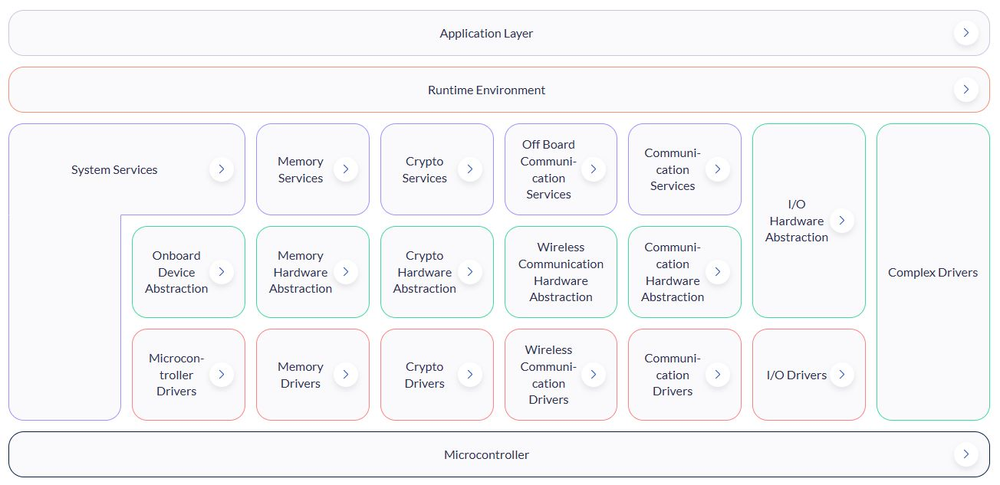
- Application
- RunTime Environment (RTE)
- Basic SoftWare (BSW):
- Services
- ECU abstraction
- MCU abstraction
9. CAN with AUTOSAR
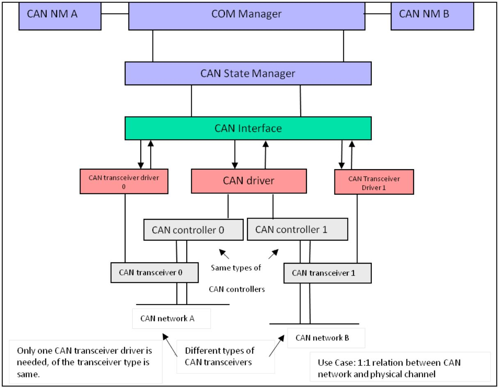
9. AUTOSAR CAN RX/TX flow
TX flow
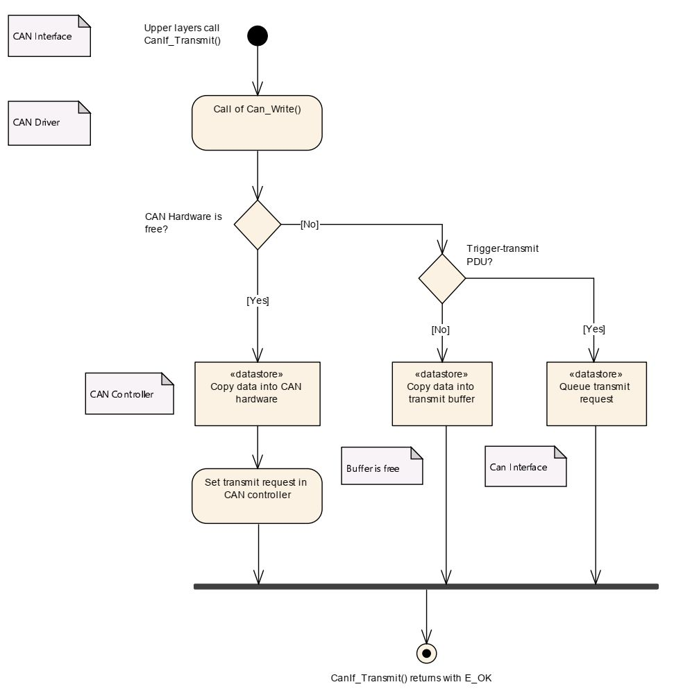
RX flow
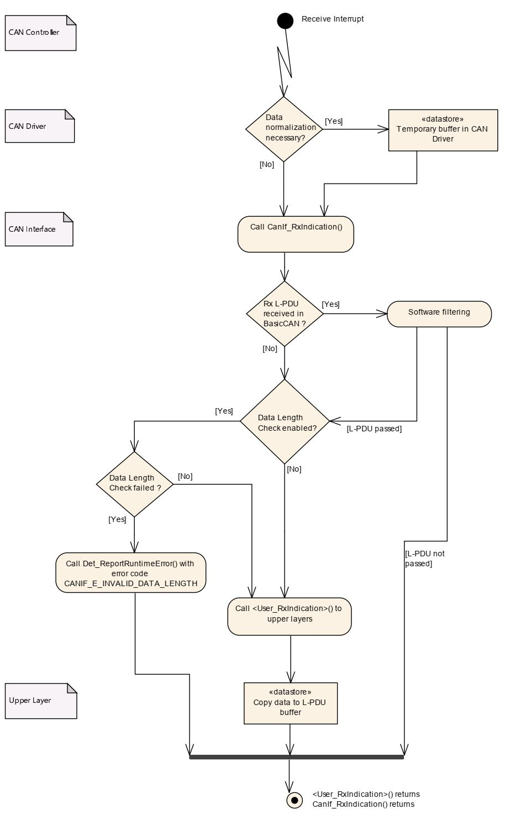
9. AUTOSAR firmware1
- AUTOSAR firmware พัฒนาบน FreeRTOS
- cyclic thread คาบ 100 ms อ่านค่า (high prio) และสื่อสาร UART (low prio)
- การประกาศรูปแบบข้อมูล
- Callback ของ service
- การส่งข้อมูล
- การรับข้อมูล → layer สูงขึ้น
static void Can_RxIsr(int ControllerId) {
HAL_CAN_GetRxMessage(...);
hwTypeObj.CanId = id;
hwTypeObj.ControllerId = ControllerId;
hwTypeObj.Hoh = hohObj->CanObjectId;
pduInfoObj.SduDataPtr = (uint8*)au8Data;
pduInfoObj.SduLength = RxMessageHeader.DLC;
GET_CALLBACKS()->RxIndication(&hwTypeObj, &pduInfoObj);
}Q&A
- อะไรคือ trade‑off ในการออกแบบโปรโตคอลสำหรับ USB‑CAN adapter?
- หากเขียนโค้ด ring buffer แบบ copy ทั้ง header + frame จะมีผลกระทบอะไรบ้าง?
- การใช้ mailbox (candleLight firmware) แทนการส่งแบบ direct (SLCAN firmware) มีผลกระทบต่อ reliability/ throughput/ latency / firmware complexity อย่างไร
Workshop: UDS4ECU
- UDS protocol: requirement, design, and implementation
UDS protocol
Unified Diagnostic Services (UDS, ISO 14229) เป็นโปรโตคอลสำหรับการตรวจสอบ ECU
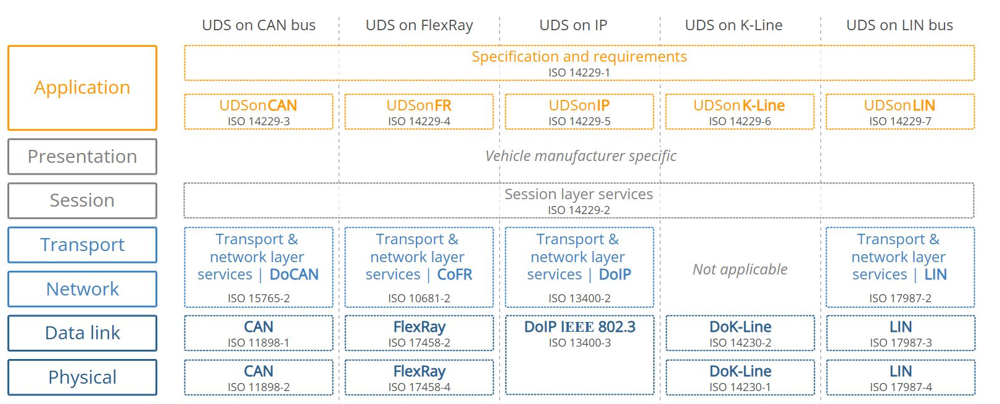
UDS protocol
Request message
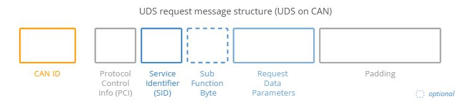
Frame
- PCI:
- SID เช่น
0x22(Read Data by Identifier) - Data Identifier (DID): 2 ไบต์
Response message (positive)
- มีโครงสร้างเดียวกับ request msg, SID + 0x40
Response message (negative)
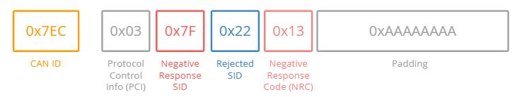

คอร์สอบรมนี้ได้รับการสนับสนุนงบประมาณจาก สป.อว.